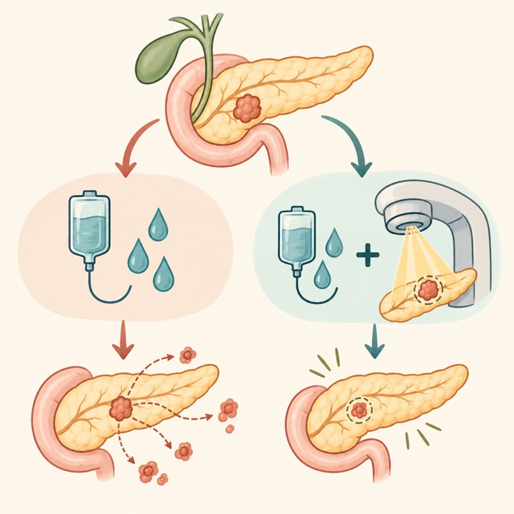
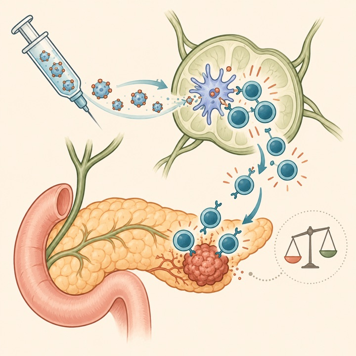
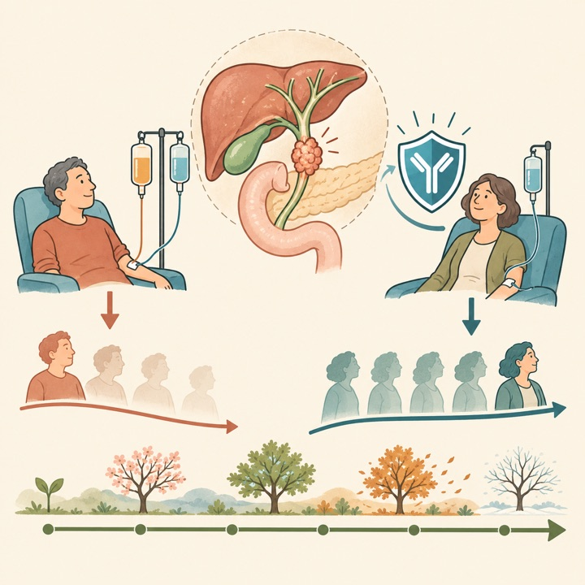
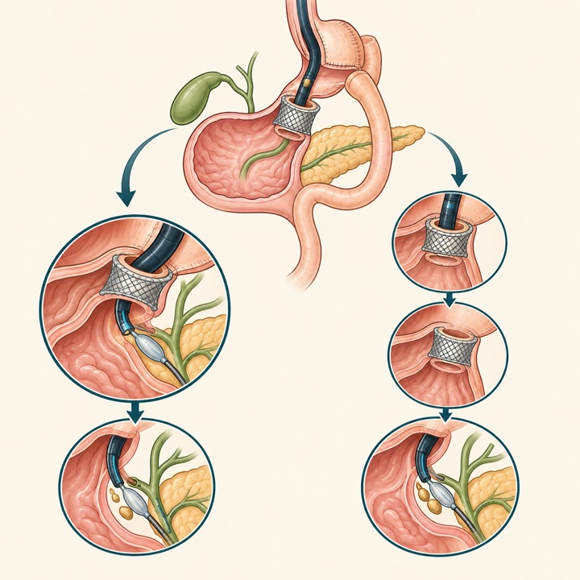
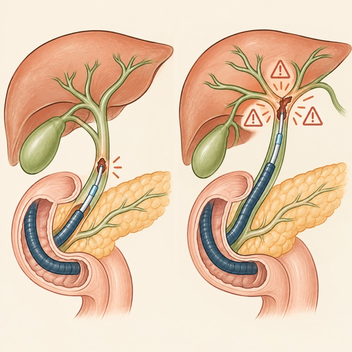
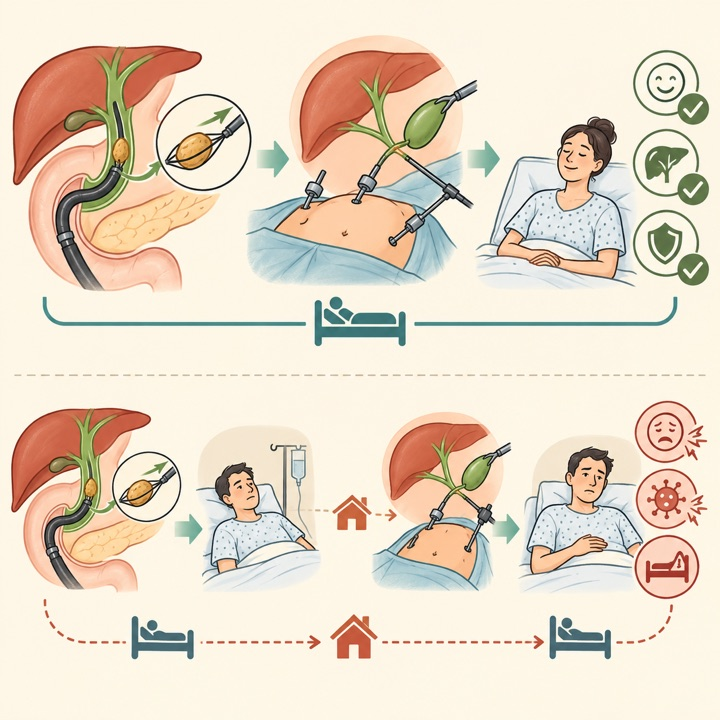
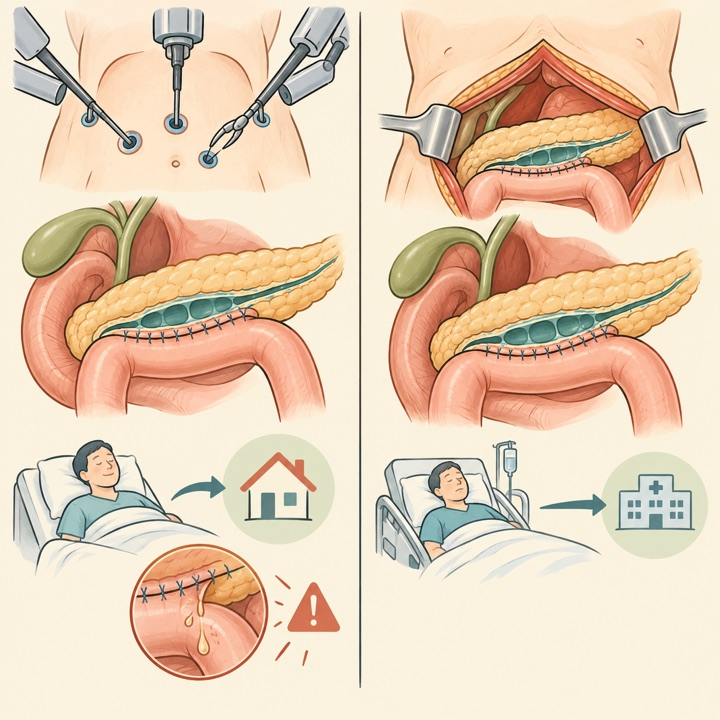
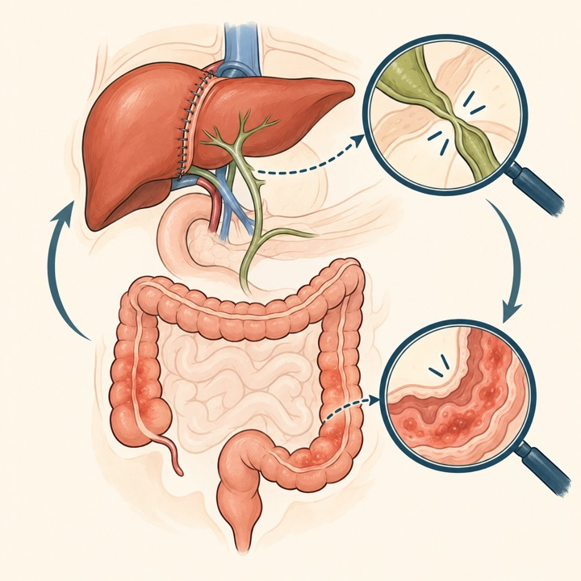

MASTERPLAN：SBRT追加で局所再発を低減
Lancet Oncology / Q1Randomized phase II
高リスク局所膵癌74例で12か月局所再発は20.2%対52.0%。ただし予定症例数に届かず早期終了しました。
Tokai University Pancreatobiliary Group
This Week's Pancreatobiliary Research Highlights
臨床的重要性、研究デザイン、診療への応用可能性を基準に4報を選定しました。IFとJCR quartileは2025年値（2026年公表、判明した最良カテゴリ）を使用し、確実に判定できない場合はQ4としています。
高リスク局所膵癌74例で12か月局所再発は20.2%対52.0%。ただし予定症例数に届かず早期終了しました。
強いKRAS特異的T細胞応答を誘導しましたが、主要DFS解析は有意差なし。探索的解析と確証的試験を分けて読む必要があります。
一次治療pembrolizumab＋GCのOS HRは0.86。36か月時点の生存率は13%対11%で、新たな安全性シグナルはありませんでした。
早期手術は開腹移行、手術時間、術後在院日数、創感染を減らし、胆汁漏は増加しませんでした。
日本語: 高リスク局所PDAC 74例を化学療法＋SBRT（40 Gy/5回）49例と化学療法単独25例へ2:1無作為化しました。12か月局所再発は20.2%対52.0%（subdistribution HR 0.44、P=0.022）で、grade 3以上有害事象は70%対64%でした。局所制御改善は明瞭ですが、予定120例に達せず早期終了し、全生存期間の確証を目的とした規模ではありません。
English: Adding SBRT reduced 12-month locoregional recurrence without a significant toxicity increase, but the phase II trial closed early after enrolling 74 of 120 planned patients.

日本語: 標準治療後6か月以内に再発のないstage I–III KRAS変異PDAC 144例をcamupepimut 96例と観察48例へ無作為化しました。主要DFSは23.8対21.2か月（HR 0.85、P=0.533）で未達でした。一方、98.9%にmKRAS特異的T細胞応答を認め、強い免疫応答はDFSと相関しました。後解析やサブグループの好結果は仮説生成的で、主要評価項目陰性を上書きしません。
English: Camupepimut was strongly immunogenic but did not improve the prespecified primary DFS endpoint; exploratory adjusted and biomarker analyses require phase III confirmation.

日本語: 未治療進行胆道癌1,069例の36.6か月追跡で、pembrolizumab＋gemcitabine/cisplatinはplacebo＋GCに対しOS HR 0.86（95%CI 0.75–0.98）でした。36か月生存率は13%対11%、grade 3/4治療関連有害事象は70%対69%で、新たな治療関連死はありませんでした。絶対差は小さいものの、一次治療への免疫療法追加効果が長期でも維持されました。
English: The KEYNOTE-966 survival benefit persisted at roughly three years without new safety signals, although the absolute 36-month survival difference remained modest.

日本語: 胃バイパス後EDGE 346例を統合し、単回手技と二段階手技で技術成功、臨床成功、LAMS逸脱、全有害事象、遷延瘻孔、体重増加に有意差を認めませんでした。単回手技は通院回数を減らせる可能性がありますが、7研究はいずれも観察研究で信頼区間が広く、患者選択や瘻孔閉鎖法の標準化も不十分です。
English: Single-session and staged EDGE had similar pooled efficacy and safety, but the evidence remains observational and imprecise.

日本語: 胆管狭窄に対するERCP 789例で、中部・肝門部狭窄は遠位狭窄より全合併症（12.4%対5.1%）、PEP（5.0%対1.0%）、胆管炎（4.7%対1.2%）が多く、狭窄部位はPEP（OR 5.44）と胆管炎（OR 3.97）の独立関連因子でした。単一データベースの観察研究であり、予防法を直接比較した研究ではありません。
English: Middle and hilar strictures were associated with substantially higher post-ERCP pancreatitis and cholangitis than distal strictures, supporting anatomy-aware risk planning.

日本語: ERCP成功後72時間以内の早期LCと遅延LCを比較した7 RCT・593例のメタ解析です。早期LCは開腹移行（RR 0.35）、手術時間（−14.4分）、術後在院日数（−0.81日）、創感染（RR 0.21）を減らし、胆汁漏に有意差はありませんでした。遅延群の時期定義と手術時間の異質性があり、重症例や地域資源への外挿には注意が必要です。
English: Same-admission LC within 72 hours after successful ERCP reduced conversion, operative time, stay, and wound infection without a detected increase in bile leak.

日本語: オランダ全国133例（robot 36、open 97）で、ロボット手術は在院日数が2日短く、出血量も少ない一方、grade B/C膵液瘻は22.2%対7.2%と多く、主要合併症は36.1%対26.8%で有意差がありませんでした。初期導入期の非無作為化比較で、learning curveと症例選択の影響を強く受けます。
English: Robotic LPJ shortened stay and reduced blood loss but had more clinically relevant fistula, underscoring the need for experienced-center randomized evaluation.

日本語: PSC肝移植3,828例を含む34研究のメタ解析です。既存IBD増悪は36.1/1,000人年、難治性IBDによるcolectomyは12.4/1,000人年、大腸腫瘍は10.3/1,000人年でした。PSC-IBD群のPSC再発はPSC単独群より多く（IRR 2.16）、移植後もIBD活動性と大腸腫瘍の内視鏡監視を継続する根拠になります。観察研究間の定義差と残余交絡が限界です。
English: After transplantation for PSC, IBD, colorectal neoplasia, and recurrent PSC remain clinically relevant; PSC-IBD was associated with about twice the recurrence rate.

2026年10月19日〜25日にClinicalTrials.govへ初回公開または更新された研究を公式APIで確認し、胆膵疾患・胆膵内視鏡・肝移植に直接関連するものを選択しました。無関係なEUS/IgG4略語、糖尿病、嚢胞性線維症、一般固形癌のみの記録は除外しました。JRCTは検索していません。
| 新規｜内視鏡的乳頭切除 | NCT07891715 胆管＋膵管ステント対膵管ステント単独 2026-10-23公開 / 無作為化 / 190例 / Not yet recruiting。 |
|---|---|
| 新規｜PEP予防 | NCT07885852 / COLD 乳頭冷水灌流＋直腸NSAIDs対NSAIDs単独 2026-10-21公開 / 250例 / Not yet recruiting。 |
| 新規｜膵切除 | NCT07884019 / STEREOPANC 高リスク膵頭十二指腸切除前SBRTでPOPFを予防 2026-10-20公開 / 70例 / Recruiting。 |
| 新規｜肝移植 | NCT07885657 生体肝移植後AKI予防の予防的norepinephrine 2026-10-21公開 / 84例 / Not yet recruiting。 |
| 新規｜膵手術疼痛 | NCT07888413 低用量esketamine＋dexmedetomidine 2026-10-22公開 / 第IV相 / 450例 / Not yet recruiting。 |
| 新規｜PDAC外科 | NCT07889180 European Appleby Registry 2026-10-22公開 / 観察研究 / 100例 / Not yet recruiting。 |
| 新規｜胆嚢癌 | NCT07885800 通常胆嚢摘出標本における偶発胆嚢癌 2026-10-21公開 / 観察研究 / 100例 / Recruiting。 |
| 新規｜胆嚢摘出教育 | NCT07888491 腹腔鏡下胆嚢摘出の電気外科パターンとlearning curve 2026-10-22公開 / 観察研究 / 165例 / Recruiting。 |
| 更新｜胆管癌 | NCT06440993 durvalumab＋胆管内RFA 2026-10-23更新 / 第II相 / 42例 / Recruiting。 |
| 更新｜再発性膵炎 | NCT07447687 soy-tomato juiceによる再発性・慢性膵炎介入 2026-10-20更新 / 第I/II相 / 35例 / Recruiting。 |
| 更新｜EUS機器 | NCT06340620 EndoSound Vision対標準echoendoscope 2026-10-20更新 / 140例 / Recruiting。 |
| 更新｜PEP予防 | NCT03977779 生分解性膵管ステント 2026-10-21更新 / 46例 / Completed。 |
| 更新｜PEP予防 | NCT03713879 indomethacin対膵管ステント 2026-10-21更新 / 第III相 / 1,734例 / Recruiting。 |
| 更新｜PSC | NCT07387549 elafibranor第III相 2026-10-23更新 / 350例 / Recruiting。 |
| 更新｜PSC | NCT03710122 経口vancomycin 2026-10-21更新 / 第II/III相 / 102例 / Terminated。 |
| 更新｜BTC | NCT07146646 trifluridine/tipiracil＋oxaliplatin 2026-10-20更新 / 第II相 / 27例 / Suspended。 |
| 更新｜慢性膵炎 | NCT05940987 / START 電話ベース禁煙介入 2026-10-20更新 / 382例 / Completed。 |
| 更新｜KRAS G12D PDAC | NCT06586515 / MOONRAY-01 LY3962673 2026-10-20更新 / 第I相 / 630例 / Active, not recruiting。 |
| 更新｜転移性PDAC | NCT07562152 atebimetinib＋GnP一次治療 2026-10-23更新 / 第III相 / 510例 / Recruiting。 |
| 更新｜胆管癌 | NCT04891289 GemOx±肝動注FUDR/dexamethasone 2026-10-22更新 / 第II相 / 164例 / Recruiting。 |
PubMedの2026年10月19日〜25日EDAT/新着索引に加え、Nature Reviews Gastroenterology & Hepatology、The Lancet Gastroenterology & Hepatology、Gastroenterology、Gut、Clinical Gastroenterology and Hepatology、Annals of Surgery、Journal of Hepato-Biliary-Pancreatic Sciences、Gastrointestinal Endoscopy、Endoscopy、Surgical Endoscopy、Endoscopy International Open、VideoGIE、Clinical Endoscopy、Digestive Endoscopy、DEN Open、iGIEの公式最新掲載・アーカイブページと、選定論文の出版社ページまたはDOI/PubMedを確認しました。アクセス制限のあるページは公式DOIとPubMed索引を突合しています。IFは2025 Journal Impact Factorを優先し、quartileを確実に確認できない誌は依頼方針に従いQ4と表示しています。速報・ahead of printの情報は更新されることがあります。
2026年10月12日〜10月18日版
2026年10月5日〜10月11日版
2026年9月28日〜10月4日版
2026年9月21日〜9月27日版
2026年9月14日〜9月20日版
2026年9月9日〜9月15日版
2026年8月31日〜9月6日版
2026年8月24日〜8月30日版
2026年8月17日〜8月23日版
2026年8月10日〜8月16日版
2026年8月3日〜8月9日版
2026年7月27日〜8月2日版
2026年7月20日〜7月26日版
2026年7月13日〜7月19日版
2026年7月6日〜7月12日版
医療従事者向け情報： 本ページは医師・医学生・研究者向けの文献整理であり、患者向け広告、診療ガイドライン、個別の診断・治療助言ではありません。掲載内容は公開時点の情報に基づき、原著論文・最新ガイドライン・各施設の方針をご確認ください。